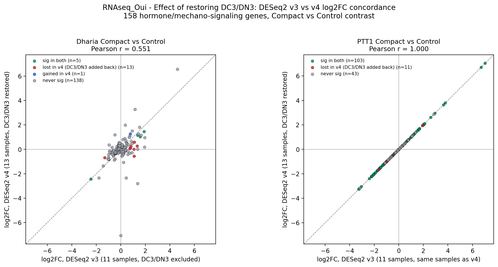
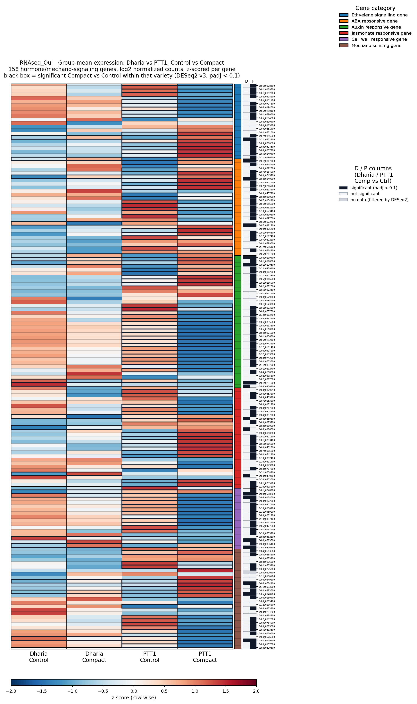
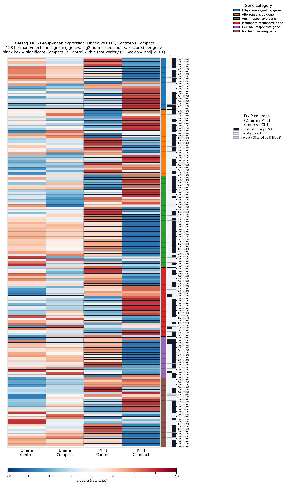

DESeq2 v3 vs v4 — Effect of Restoring DC3/DN3
v3 dropped DC3 and DN3 as PCA outliers (11 samples total); v4 restored them per the instructor's request (13 samples, full 3 replicates per group). This page quantifies how much that single decision changed the Compact-vs-Control result for the 158 hormone/mechano-signaling candidate genes, in each variety separately. PTT1 samples are identical between v3 and v4 (DC3/DN3 only affects Dharia), so the PTT1 numbers below act as a built-in negative control: if the method is sound, PTT1 should barely move while Dharia should move a lot.
Read with caution: this is exactly the batch-effect concern already flagged in the 2026-09-09 DESeq2 v4 log — DC3/DN3 still fall outside their group in PCA/heatmap after trimming, so the two extra Dharia replicates they add are noisier than the rest. The drop in Dharia-significant genes below is consistent with that, not a contradiction of it.
log2FC concordance, v3 vs v4

Significant genes by category
| Category | # genes | Dharia sig, v3 | Dharia sig, v4 | PTT1 sig, v3 | PTT1 sig, v4 |
|---|---|---|---|---|---|
| ABA responsive gene | 27 | 3 | 0 | 20 | 17 |
| Auxin responsive gene | 37 | 4 | 0 | 28 | 26 |
| Cell wall responsive gene | 17 | 4 | 3 | 16 | 14 |
| Ethylene signalling gene | 21 | 1 | 1 | 16 | 16 |
| Jasmonate responsive gene | 28 | 3 | 2 | 16 | 14 |
| Mechano sensing gene | 27 | 3 | 0 | 18 | 16 |
Every category loses Dharia-significant genes when DC3/DN3 are added back — ABA, Auxin and Mechano sensing drop to zero significant genes in Dharia entirely. PTT1 barely changes in any category (at most −3 genes).
Group-mean heatmaps, side by side


See the full-size, per-gene versions on the Correlation Heatmap page's neighbor, or download the PDFs below.
Download
Method note: "significant" = DESeq2 padj < 0.1 within each variety's own Compact-vs-Control contrast (same threshold used throughout this project). One gene, Os03g0320400, is filtered out by DESeq2's independent filtering in both versions and is excluded from all counts above (157 of 158 genes shown). See the Correlation Heatmap page for how the descriptive z-scored group-mean colors relate to (and can disagree with) this statistical significance call.